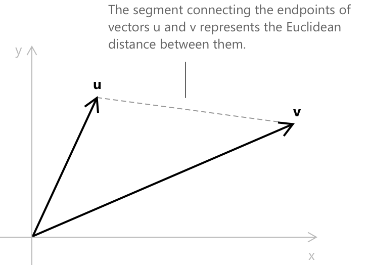
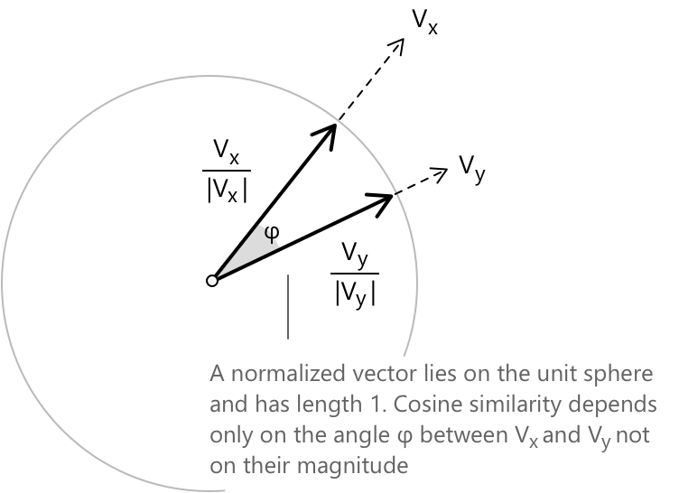

Косинусна подібність
Що таке косинусна схожість
При роботі з великими колекціями текстів стає необхідним мати інструменти, які дозволяють комп'ютеру оцінити, наскільки два документи схожі один на одного. Одним із найбільш широко використовуваних підходів у цьому контексті є косинусна схожість — міра, що ґрунтується на лінійній алгебрі та кількісно визначає зв'язок між двома векторами через кут, який вони утворюють.
Центральна ідея полягає в тому, що будь-який документ може бути представлений як вектор у багатовимірному просторі, де кожен компонент відповідає певній ознаці тексту, наприклад, частоті вживання конкретного слова або його контекстуальній релевантності. Після того як два документи були таким чином закодовані, ступінь їхньої схожості можна оцінити, дослідивши геометричний зв'язок між відповідними векторами. Що відрізняє косинусну схожість від простіших мір відстані, так це те, що вона зосереджена виключно на орієнтації векторів, ігноруючи їхню величину: два документи вважатимуться схожими, якщо вони спрямовані приблизно в одному напрямку в просторі ознак, незалежно від їхньої довжини.
Назва цієї міри походить безпосередньо від функції косинуса: косинусна схожість визначається як косинус кута між двома векторами, а її значення виражається наступною формулою, яка детально розглянута в наступному розділі:
\[ C_s(V_x, V_y) = \frac{V_x \cdot V_y}{\|V_x\| \, \|V_y\|} \]
Хоча існують більш складні методи вимірювання семантичної схожості, такі як нейронні ембеддинги або мовні моделі на основі трансформерів, косинусна схожість пропонує переконливий баланс між математичною простотою та практичною ефективністю. Вона широко використовується в рекомендаційних системах, автоматичній класифікації текстів і семантичному пошуку, де критично важливою є можливість швидко оцінити зв'язок між документами. Далі ми розглянемо, як обчислити косинусну схожість крок за кроком, починаючи з конкретного прикладу з невеликим набором речень.
Варто пам'ятати, що косинусна схожість взагалі не має семантичного розуміння мови. Ця міра не осягає фактичного значення слів або речень, а працює суто на геометричному понятті близькості між векторами. Два документи можуть бути визнані схожими, тому що їхні числові представлення спрямовані в одному напрямку, навіть якщо їхній зміст концептуально не пов'язаний, і навпаки, документи з тісно пов'язаними значеннями можуть здатися віддаленими, якщо їхні векторні представлення відрізняються за орієнтацією.
Відстань між векторами та її обмеження
Перед введенням косинусної схожості варто розглянути більш елементарний підхід до вимірювання того, наскільки два вектори близькі один до одного, а саме — евклідову відстань. Дано два вектори \(\mathbf{u} = (u_1, u_2, \ldots, u_n)\) та \(\mathbf{v} = (v_1, v_2, \ldots, v_n)\), евклідова відстань між ними визначається наступним чином:
\[ d(\mathbf{u}, \mathbf{v}) = \sqrt{\sum_{i=1}^{n} (u_i – v_i)^2} \]
Ця формула вимірює відстань по прямій між двома точками в \(n\)-вимірному просторі, які визначають ці вектори.

Мале значення \(d(\mathbf{u}, \mathbf{v})\) вказує на те, що два вектори геометрично близькі один до одного, тоді як велике значення вказує на те, що вони знаходяться далеко. Оскільки евклідова відстань є необмеженою величиною, іноді зручно перетворити її на показник схожості, що набуває значень у обмеженому проміжку. Одним із поширених способів зробити це є наступне перетворення:
\[ \text{sim}(\mathbf{u}, \mathbf{v}) = \frac{1}{1 + d(\mathbf{u}, \mathbf{v})} \]
Цей вираз відображає відстань у значення на проміжку \((0, 1]\). Коли два вектори ідентичні, відстань дорівнює нулю, а схожість дорівнює \(1\). У міру збільшення відстані схожість монотонно зменшується до \(0\), ніколи його не досягаючи.
Евклідова відстань, однак, має суттєве обмеження при застосуванні до аналізу текстів: вона чутлива до величини векторів, а не лише до їхнього напрямку. Два документи, що обговорюють одні й ті самі теми, створять вектори, які спрямовані в одному напрямку, але один із них може мати набагато більшу норму просто тому, що він довший. Евклідова відстань тоді вкаже на те, що два документи знаходяться далеко один від одного, хоча їхній зміст по суті ідентичний. Косинусна схожість усуває це обмеження шляхом нормалізації векторів перед їх порівнянням, так що враховується лише кут між двома напрямками.
Як обчислити косинусну схожість між двома векторами
Косинусна схожість визначається як косинус кута, що утворюється двома векторами в заданому векторному просторі. Дано два вектори \(\mathbf{V_x}\) та \(\mathbf{V_y}\) у \(\mathbb{R}^n\), тоді косинусна схожість між ними виражається наступною формулою:
\[ C_s(V_x, V_y) = \frac{\displaystyle\sum_{i=1}^{n} V_{x_i} \cdot V_{y_i}}{\sqrt{\displaystyle\sum_{i=1}^{n} (V_{x_i})^2} \cdot \sqrt{\displaystyle\sum_{i=1}^{n} (V_{y_i})^2}} \]
У компактному записі, використовуючи скалярний добуток та евклідову норму, той самий вираз набуває такого вигляду:
\[ C_s(V_x, V_y) = \frac{V_x \cdot V_y}{\|V_x\| \, \|V_y\|} \]
У цих виразах \(V_x \cdot V_y\) позначає скалярний добуток двох векторів, тоді як \(\|V_x\|\) та \(\|V_y\|\) — їхні відповідні евклідові норми. Ділення на добуток норм є саме тим кроком нормалізації, який усуває вплив величини вектора і зберігає лише інформацію про напрямок.

Значення косинусної схожості варіюється від \(-1\) до \(1\). У текстовому аналізі, де компоненти векторів за означенням є невід'ємними, діапазон обмежений \([0, 1]\). Значення, близьке до \(1\), вказує на те, що кут між двома векторами малий, тобто вектори майже паралельні, а відповідні документи дуже схожі. Значення, близьке до \(0\), вказує на те, що вектори майже ортогональні, і, отже, два документи мають мало спільного або взагалі не мають спільного змісту.
З чисто математичної точки зору, значення \(-1\) вказує на те, що два вектори спрямовані в абсолютно протилежних напрямках, утворюючи кут \(180°\). Такий випадок не виникає в текстовому аналізі, де всі компоненти векторів невід'ємні, але він залишається частиною загального математичного означення.
Приклад 1
Розглянемо три речення, для яких ми хочемо визначити ступінь взаємної схожості:
- \(x\) = I am fond of reading thriller novels.
- \(y\) = I prefer reading thriller novels.
- \(z\) = Yesterday, I arrived late.
Попередній огляд свідчить, що речення \(x\) та \(y\) мають спільну тему, тоді як речення \(z\) явно не пов'язане з двома іншими.
Перший крок полягає в перетворенні кожного речення у вектор шляхом виділення всіх унікальних слів і фіксації частоти їхньої появи. Перед цим ми видаляємо слова, які мають мало семантичного змісту, такі як сполучник «of», займенник «I» та дієслово «to be». Цей крок фільтрації, відомий як видалення стоп-слів, є стандартною практикою в текстовому аналізі, особливо при роботі з великими корпусами текстів, оскільки це гарантує, що отримані вектори відображатимуть лише найзначущіші лексичні елементи.
| arrived | fond | late | novels | prefer | reading | thriller | yesterday | |
|---|---|---|---|---|---|---|---|---|
| \(V_x\) | 0 | 1 | 0 | 1 | 0 | 1 | 1 | 0 |
| \(V_y\) | 0 | 0 | 0 | 1 | 1 | 1 | 1 | 0 |
| \(V_z\) | 1 | 0 | 1 | 0 | 0 | 0 | 0 | 1 |
Результатом цього процесу є наведена вище матриця «термін-документ», де кожен запис вказує, чи присутнє певне слово у відповідному реченні. У цьому випадку значення є бінарними, оскільки кожне значуще слово з'являється щонайбільше один раз у кожному реченні; загалом записи також можуть представляти необроблені частоти слів або зважені значення, такі як показники TF-IDF. Таким чином, векторне представлення трьох речень є наступним:
- \(V_x = [0, 1, 0, 1, 0, 1, 1, 0]\)
- \(V_y = [0, 0, 0, 1, 1, 1, 1, 0]\)
- \(V_z = [1, 0, 1, 0, 0, 0, 0, 1]\)
Тепер ми застосуємо формулу косинусної схожості до пари \((V_x, V_y)\), від якої ми очікуємо високого значення схожості. Слід обчислити наступну формулу:
\[ C_s(V_x, V_y) = \frac{V_x \cdot V_y}{\|V_x\| \, \|V_y\|} \]
Почнемо з обчислення скалярного добутку \(V_x \cdot V_y\). Перемноживши відповідні компоненти двох векторів і підсумувавши результати, отримаємо:
\[ V_x \cdot V_y = (0 \cdot 0) + (1 \cdot 0) + (0 \cdot 0) + (1 \cdot 1) + (0 \cdot 1) + (1 \cdot 1) + (1 \cdot 1) + (0 \cdot 0) = 3 \]
Далі ми обчислимо евклідову норму кожного вектора, яка з'являється в знаменнику формули. Норма \(V_x\) визначається так:
\[ \|V_x\| = \sqrt{0^2 + 1^2 + 0^2 + 1^2 + 0^2 + 1^2 + 1^2 + 0^2} = \sqrt{4} = 2 \]
Норма \(V_y\) обчислюється аналогічно:
\[ \|V_y\| = \sqrt{0^2 + 0^2 + 0^2 + 1^2 + 1^2 + 1^2 + 1^2 + 0^2} = \sqrt{4} = 2 \]
Підставляючи обчислені значення у формулу, ми отримаємо косинусну схожість:
\[ C_s(V_x, V_y) = \frac{3}{2 \times 2} = \frac{3}{4} = 0.75 \]
Кут між векторами
Щоб знайти кут \(\theta\) між двома векторами \(V_x\) та \(V_y\) за значенням косинусної схожості, ми застосовуємо функцію арккосинуса. Оскільки косинусна схожість визначена як косинус кута між двома векторами, кут можна відновити шляхом інвертування цього зв'язку. У даному випадку ми отримаємо:
\[ \theta = \arccos(0.75) \approx 41.4^\circ \]
Цей результат узгоджується з високим значенням схожості, обчисленим раніше: кут приблизно \(41.4^\circ\) вказує на те, що два вектори орієнтовані майже в одному напрямку в просторі ознак. Загалом, у міру того як кут між двома векторами зменшується до нуля, їхня косинусна схожість наближається до \(1\), що відображає зростаючий ступінь схожості між відповідними документами.
Косинусна схожість та ортогональність векторів
Тепер обчислимо косинусну схожість між \(V_x\) та \(V_z\), які представляють речення з абсолютно різною тематикою. Скалярний добуток \(V_x \cdot V_z\) отримують шляхом множення відповідних компонентів двох векторів та підсумовування результатів:
\[ V_x \cdot V_z = (0 \cdot 1) + (1 \cdot 0) + (0 \cdot 1) + (1 \cdot 0) + (0 \cdot 0) + (1 \cdot 0) + (1 \cdot 0) + (0 \cdot 1) = 0 \]
Оскільки чисельник формули косинусної схожості дорівнює нулю, косинусна схожість між \(V_x\) та \(V_z\) сама по собі дорівнює нулю. Цей результат вказує на те, що два вектори є ортогональними, тобто вони не мають жодних спільних ознак. З лінгвістичної точки зору це цілком узгоджується з тим спостереженням, що речення \(x\) та \(z\) не мають спільних слів після видалення стоп-слів.
Реалізація на Python
Нижче наведено приклад коду на Python для обчислення косинусної схожості векторів \(V_x\) та \(V_y\), який ви можете перевірити в онлайн-IDE.
import numpy as np
# Define the vectors
Vx = np.array([0, 1, 0, 1, 0, 1, 1, 0])
Vy = np.array([0, 0, 0, 1, 1, 1, 1, 0])
# Function to calculate cosine similarity
def cosine_similarity(vector1, vector2):
# Calculate the dot product
dot_product = np.dot(vector1, vector2)
# Calculate the norms of each vector
norm1 = np.linalg.norm(vector1)
norm2 = np.linalg.norm(vector2)
# Calculate the cosine similarity
cosine_sim = dot_product / (norm1 * norm2)
return cosine_sim
# Calculate and print the cosine similarity
similarity = cosine_similarity(Vx, Vy)
print(f"Cosine similarity (Vx,Vy): {similarity}")
Після видалення деяких слів з оригінальних прикладів речень для більш точної оцінки, речення були вставлені в код безпосередньо як вектори, що дало значення косинусної схожості \(0.75\). Для повного прикладу, що починається з необроблених речень, замість цього можна розглянути наступний код. У цьому випадку значення косинусної схожості між \(V_x\) та \(V_y\) буде приблизно \(0.48\).
from sklearn.feature_extraction.text import TfidfVectorizer
from sklearn.metrics.pairwise import cosine_similarity
sentences = [
"I am fond of reading thriller novels.", # x
"I prefer reading thriller novels.", # y
"Yesterday, I arrived late." # z
]
# Initialize a TF-IDF Vectorizer
vectorizer = TfidfVectorizer()
# Fit and transform the sentences to a TF-IDF matrix
tfidf_matrix = vectorizer.fit_transform(sentences)
# Compute the cosine similarity matrix
cosine_sim = cosine_similarity(tfidf_matrix, tfidf_matrix)
print("Cosine Similarity Matrix:\n", cosine_sim)
Висновки
Косинусна схожість є математично обґрунтованою та обчислювально ефективною мірою для оцінки ступеня схожості між документами помірної довжини. Її головна перевага полягає в нормалізації: зосереджуючись на напрямку векторів, а не на їхній величині, вона правильно ідентифікує як схожі ті документи, що мають однаковий тематичний зміст, незалежно від їхньої довжини.
Однак для довших документів ситуація складніша. У міру збільшення довжини тексту зростає складність його семантичної структури, і одного кута в просторі векторів частотності термів може бути недостатньо для того, щоб зафіксувати тонкі відмінності в значенні. У таких випадках зазвичай доречнішими є більш складні підходи, такі як щільні векторні представлення, створені нейронними мовними моделями.